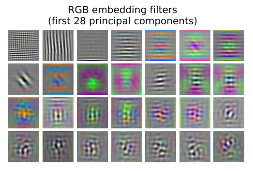
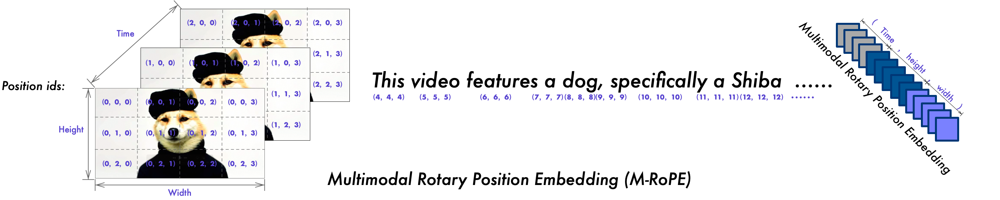

第 3 章 Transformer 架构详解
💡 本章导读
Transformer 是整本书出现频率最高的名词：CLIP 的双塔是两个 Transformer，LLaVA 的语言主干是 decoder-only Transformer，第 4 章的 Flash Attention 优化的是 Transformer 里的注意力算子，第 15 章的 Q-Former 本身就是一个微型 Transformer。本章按 2026 年现代大模型（LLaMA / Qwen / InternVL 系）的实际形态——而不是 2017 年论文的原始形态——把每个模块讲透：自注意力的完整数学（含 $\frac{1}{\sqrt{d}}$ 缩放因子的方差推导）、RoPE 旋转位置编码的不跳步推导、KV Cache 的显存公式。最后一节为第二部分铺垫：视觉 token 到底是以什么姿势"坐进"语言模型的注意力矩阵里的。如果你只想精读全书三章，本章必须占一席。
1.从序列建模的困境到 Transformer
2017 年 6 月之前，序列建模的默认答案是循环神经网络（Recurrent Neural Network, RNN）及其门控变体 LSTM/GRU。RNN 把整条序列压进一个隐状态 $\mathbf{h}_t$，按时间步串行更新：$\mathbf{h}_t = f(\mathbf{h}_{t-1}, \mathbf{x}_t)$。这个结构有两个从根上就治不好的病。第一，无法并行：$\mathbf{h}_t$ 依赖 $\mathbf{h}_{t-1}$，训练时必须一步步算，GPU 的上万核心大部分时间在围观。第二，长距离依赖的信号路径是 $O(n)$ 的：第 1 个词的信息要传到第 1000 个词，需要经过 999 次状态更新，每过一关就被乘一次雅可比矩阵——梯度消失/爆炸（第 1 章末尾提到的 Pascanu 分析）正是这条链式路径的必然产物。LSTM 的门控与残差连接把"可传递的距离"从几十拉长到几百，但指数衰减的宿命没有改变。
其实注意力机制早已存在——Bahdanau 等人在 2014 年把它用于机器翻译（第 6 章详述），但它当时只是 RNN 之上的"补丁"：RNN 负责顺序计算，注意力负责把远处的编码器状态直接拿过来。Vaswani 等人的激进之处在于论文标题的宣言：Attention Is All You Need（NeurIPS 2017，arXiv:1706.03762）——把 RNN 整个扔掉，只用堆叠的自注意力与前馈层构建序列模型。这就是 Transformer。它的两个根本优势：任意两个位置之间的信息路径长度是 $O(1)$（一步注意力直达），以及整个序列可以一次并行计算（各位置的注意力互相独立），后者让 GPU/TPU 的算力终于能被吃满。

1.1 从编码器-解码器到 decoder-only：GPT 与 BERT 的分野
原始 Transformer 是为机器翻译设计的编码器-解码器（Encoder-Decoder）结构：编码器看完整源句（双向注意力），解码器逐词生成目标句（因果注意力 + 交叉注意力）。此后五年，社区沿着两条岔路把它各自走到极致：
编码器-only 路线（BERT 系）：Devlin 等人（arXiv:1810.04805，NAACL 2019）保留编码器，用双向注意力 + 掩码语言建模（Masked Language Modeling, MLM）预训练——随机遮住 15% 的词让模型复原。双向注意力让每个 token 都能"看到全文"，擅长理解类任务（分类、检索排序、NER），但不能直接做生成（训练时看的是残缺句子，推理时逐词生成的分布不匹配）。这条路线的视觉对应物是 BERT 式的 ViT/MAE（第 5、14 章）。
解码器-only 路线（GPT 系）：Radford 等人的 GPT（2018）→GPT-2（2019）→Brown 等人的 GPT-3（arXiv:2005.14165，2020）证明：只保留解码器，用最朴素的"预测下一个词"（Next-Token Prediction）+ 因果掩码（Causal Mask）训练，规模上来之后不仅能生成，理解能力同样涌现，而且天然支持 in-context learning。GPT-3 的 1750 亿参数版本有 96 层、$d_{model}=12288$、96 个注意力头。到 2023 年之后，几乎所有开源 LLM（LLaMA、Qwen、Mistral）与所有主流多模态大模型的语言主干都收敛到 decoder-only。

🕰 历史一刻：2017 年 6 月 12 日，arXiv:1706.03762 挂出
这篇被引用超过十万次的论文当时只是一份"翻译模型调参报告"：8 张 P100 训练 3.5 天，WMT14 英德 BLEU 28.4（超过此前所有单模型），英法 41.8。论文里后来被反复重写的细节比比皆是：LayerNorm 当时放在残差之后（Post-LN，今天已基本被 Pre-LN 取代）、学习率用 4000 步 warmup 的正弦调度、位置编码用正弦表（今天 RoPE 当道）、激活函数用 ReLU（今天 SwiGLU 当道）。真正的"不变量"只有一条：用自注意力做全局信息交换 + 用逐位置前馈层做非线性变换，用残差流把它们缝起来。读懂这个骨架，2017 到 2026 年的所有架构改动都只是"旋钮"。
2.架构总览与张量形状流动
2026 年的现代 decoder-only 块（以 LLaMA 系为模板）长这样：
每一层做两件事：注意力（token 之间横向交换信息）与 FFN（每个 token 独立地纵向加工），两者都以残差连接（Residual Connection）的方式写回主流。所有层共享一条"残差流"（Residual Stream）：可以把它想象成一条信息高速公路，注意力与 FFN 是两个不断往高速公路上读写信息的"车站"。这个视角（由 interpretability 社区提炼）解释了大量现象——比如为什么 Pre-Norm 训练更稳（第 7 节）、为什么 embedding 输出可以跨层读取。
用具体数字过一遍数据流（以 LLaMA-2-7B 为例：$L=32$ 层、$d_{model}=4096$、$V=32000$、32 个注意力头、每头 $d_{head}=128$）：
（1）词嵌入：输入 $\mathbf{t} \in \{0,\dots,V-1\}^{B\times T}$（$B$ 是 batch，$T$ 是序列长度），查表得到 $\mathbf{E}[\mathbf{t}] \in \mathbb{R}^{B\times T\times 4096}$。嵌入矩阵 $\mathbf{E} \in \mathbb{R}^{V\times d}$ 有 32000×4096 ≈ 1.31 亿参数；现代模型常让输出投影（unembedding，$\mathrm{LM\ head}$）与输入嵌入共享权重（weight tying），省下一份 $V\times d$ 的参数与显存。
（2）32 个解码块：每块内部先注意力后 FFN，张量形状始终是 $B\times T\times 4096$——形状不变、内容更新是 Transformer 的美学，也是残差网络的遗产。
（3）最终归一化 + 输出层：RMSNorm 之后乘上 $\mathrm{LM\ head}$ 得到 logits $\in \mathbb{R}^{B\times T\times V}$，softmax 后即下一个 token 的分布。训练时对全部 $T$ 个位置并行算交叉熵（第 1 章式）；生成时只关心最后一个位置。
参数与计算量的快捷账本（忽略 bias）：每个解码块有 $4d^2$（QKVO）+ $3\times d \times d_{ff}$（SwiGLU 的三个矩阵，$d_{ff}=\frac{8}{3}d$ 时即 $8d^2$）≈ $12d^2$ 参数；$L$ 层总计约 $12Ld^2$，加上 $2Vd$ 的嵌入与输出层，就是 "$12Ld^2 + 2Vd$" 这个大模型参数估算公式的由来（LLaMA-2-7B：$12\times32\times4096^2 \approx 64.4$ 亿 + $2\times32000\times4096 \approx 2.6$ 亿 ≈ 67 亿，与实际 6.74B 吻合）。训练每 token 的前向 FLOPs 约为 $2\times$参数量（矩阵乘法每个元素 2 FLOPs），反向再乘 2 倍，共约 $6\times$参数量——这是第 7 章估算训练成本的基础公式。
3.自注意力完整数学：QKV 与缩放因子
自注意力（Self-Attention）解决的问题是：序列中每个 token 应该从哪些 token 收集多少信息。直觉上它是一个可微分的"软检索"系统：每个 token 发出一个查询（Query, Q），所有 token 提供键（Key, K）供匹配、值（Value, V）供读取。给定输入序列 $\mathbf{X}\in\mathbb{R}^{T\times d}$（每个 token 一个 $d$ 维向量，来自嵌入层加上位置编码——第 5 节），三个投影矩阵把同一个 $\mathbf{X}$ 映射成三种角色：
注意力输出定义为：
逐符号拆开看。$\mathbf{Q}\mathbf{K}^{\top}\in\mathbb{R}^{T\times T}$ 是相似度矩阵，第 $(i,j)$ 元 $s_{ij}=\mathbf{q}_i\cdot\mathbf{k}_j$ 表示"位置 $i$ 对位置 $j$ 的兴趣"。$\mathbf{M}\in\mathbb{R}^{T\times T}$ 是注意力掩码：因果掩码把 $j > i$ 的位置填 $-\infty$（softmax 后变为 0），双向掩码全零。softmax 沿 $j$ 归一化，使每行成为一个概率分布——每个 token 把 100% 的"注意力预算"分配给（包括自己在内的）可见 token。输出即 $\mathbf{V}$ 的凸组合：$\mathbf{o}_i = \sum_j p_{ij}\mathbf{v}_j$，形状 $T\times d_k$。整个操作的 FLOPs 约为 $2T^2 d_k\times 2 = 4T^2 d_k$（两次矩阵乘），空间上 $\mathbf{Q}\mathbf{K}^{\top}$ 与 softmax 结果都是 $T\times T$——这个平方项是第 4 章全部故事的起点。
📐 理论推导：缩放因子 $\frac{1}{\sqrt{d_k}}$ 从哪来
论文对缩放只给了一句"点积在 $d_k$ 大时方差变大、把 softmax 推进梯度极小的饱和区"。这句话值得完整推导一遍。
第一步：假设与设定。设 $\mathbf{q}=(q_1,\dots,q_{d_k})$、$\mathbf{k}=(k_1,\dots,k_{d_k})$，各分量相互独立，且 $q_i, k_i$ 零均值、方差为 1（这个假设对初始化后的网络是近似成立的：嵌入与权重接近零均值，方差经过精心归一）。
第二步：求点积的均值与方差。点积 $s=\mathbf{q}\cdot\mathbf{k}=\sum_{i=1}^{d_k}q_i k_i$。由独立性，$\mathbb{E}[s]=\sum_i \mathbb{E}[q_i]\mathbb{E}[k_i]=0$。方差逐项累加：
（中间用到独立随机变量乘积的方差公式 $\mathrm{Var}(XY)=\mathbb{E}[X^2]\mathbb{E}[Y^2]-\mathbb{E}[XY]^2$。）所以 $\mathrm{Var}\!\left(s/\sqrt{d_k}\right)=\mathrm{Var}(s)/d_k=1$：除以 $\sqrt{d_k}$ 把分数的方差"钉"回 1，与头维度无关。
第三步：不缩放会发生什么。若 $d_k=64$ 而不除 $\sqrt{d_k}$，分数标准差约 8；$d_k=512$ 时约 22.6——不同 token 分数之间动辄相差数十。softmax 的输出由"最大项 vs 其余项之和"的比值决定，分数差超过约 5 之后，输出版本迅速趋向 one-hot：注意力塌缩为"只看一个 token"的硬选择。更糟的是梯度：softmax 饱和区里，$\partial p_i/\partial s_j = p_i(\delta_{ij}-p_j)$ 在 $p\to$ one-hot 时趋于 0，整条注意力通路近乎断流，训练在早期就停滞。
第四步：为什么是 $\sqrt{d_k}$ 而不是 $d_k$。方差随 $d_k$ 线性增长，标准差随 $\sqrt{d_k}$ 增长；归一化目标是让分数落在 softmax 的"线性响应区"（分数差在个位数内），因此按标准差归一，即除以 $\sqrt{d_k}$。$\blacksquare$
工程注脚：真实网络中 $q_i,k_i$ 的方差并非恰好 1（权重范数与训练会改变它），所以一些模型进一步做了 QK-Norm（第 7 节）或在 FP8 训练里对注意力分数再缩放（FlashAttention-3，第 4 章）——它们都是本推导在极端条件下的补丁。
因果掩码的实现细节。数值上不能真的写 $-\infty$（会产生 NaN 风险），通用做法是加一个 $-10^9$（或 torch.finfo(dtype).min）的加性掩码：$\mathrm{softmax}(\mathbf{s} + \mathbf{M})$，其中 $M_{ij}=-10^9 \cdot [j > i]$。注意掩码必须随注意力分数的数据类型走：FP16 下 $-10^9$ 溢出（FP16 最小约 $-65504$），要改用 $-65504$；BF16 下 $-10^9$ 才安全。这类 dtype 细节是自实现注意力最常见的翻车点之一。
import torch
import torch.nn.functional as F
torch.manual_seed(0)
B, T, d = 2, 5, 16 # batch、序列长度、特征维
X = torch.randn(B, T, d)
def naive_sdpa(X, Wq, Wk, Wv, mask=None):
"""手写缩放点积注意力，逐步对应数学定义"""
Q, K, V = X @ Wq, X @ Wk, X @ Wv # [B,T,d] × [d,d] → Q,K,V ∈ [B,T,d]
d_k = Q.size(-1)
scores = Q @ K.transpose(-2, -1) / d_k ** 0.5 # [B,T,T]：除以 √d_k 是本节推导的主角
if mask is not None:
# 加性掩码：被禁止的位置加一个"足够负"的数，softmax 后权重≈0
scores = scores + mask
attn = F.softmax(scores, dim=-1) # 沿 K 维归一化，每行和为 1
return attn @ V, attn # [B,T,d], [B,T,T]
# 因果掩码：上三角（含对角线以上）禁止 → 位置 i 只能看到 ≤ i 的 token
causal = torch.full((T, T), float("-1e9")).triu(1) # 注意 FP16 下应改用 -65504
Wq = torch.randn(d, d) / d ** 0.5
out, attn = naive_sdpa(X, Wq, Wq.clone(), Wq.clone(), mask=causal)
print(out.shape, attn[0, -1].sum().item()) # [2,5,16]，最后一行的注意力权重和=1
# 与官方融合算子对照：一行完成（内部自动分派到 FlashAttention/高效后端，见第 4 章）
out2 = F.scaled_dot_product_attention(
X @ Wq, X @ Wq, X @ Wq, attn_mask=None, is_causal=True, dropout_p=0.0)
print((out - out2).abs().max().item()) # ≈1e-6，数值一致（掩码实现方式不同带来微小差异）
4.多头注意力与工程实现
只做一次 $d$ 维注意力有个问题：一次 softmax 是一种"平均"，它只能同时表达一种关注模式。而语言显然需要多种模式并行——语法依存（"动词找主语"）、共指消解（"它"找先行词）、语义相似（近义词相互拉拢）关注的子空间不同。多头注意力（Multi-Head Attention, MHA）的解法简单粗暴：把 $d$ 维切成 $h$ 份，每份 $d_k = d/h$ 维，各自独立跑一遍第 3 节的注意力，再拼接融合：
其中 $\mathbf{W}_Q^{(i)},\mathbf{W}_K^{(i)},\mathbf{W}_V^{(i)}\in\mathbb{R}^{d\times d_k}$，拼接后 $\mathbf{W}_O\in\mathbb{R}^{d\times d}$ 把 $h$ 个 $d_k$ 维头投回 $d$ 维。关键观察：多头版与单头版的参数量、计算量几乎相同（都是 $4d^2$ 与 $O(T^2 d)$）——切的只是矩阵，不是规模。论文用 $h=8, d_k=64$（base）；GPT-3 用 $h=96$。消融上，把 $h$ 降到 1 会明显掉点，而 $h$ 在一个较宽区间（例如 8–32）内性能相对平坦，说明"多视角"比"恰好几个头"重要。
注意一个常见的误解：$d_k = d/h$ 变小后，注意力分数的维度变了，缩放因子也跟着变——$\frac{1}{\sqrt{d_k}} = \sqrt{h/d}$。这就是为什么头的数目会影响数值行为：$h$ 越大、$d_k$ 越小，$\mathbf{Q}\mathbf{K}^{\top}$ 的低秩结构越弱、分数分布越"尖"（方差被钉在 1，但可用信息维度变少）。2023 年后的一些分析工作（如 " talker-head" 类实验与 QK-Norm 实践）都指向同一件事：头之间的分数幅度管理是训练稳定性的关键变量之一。
import torch
import torch.nn as nn
class MultiHeadAttention(nn.Module):
"""与 nn.MultiheadAttention 等价的最小实现（batch_first=True）"""
def __init__(self, d_model: int, n_heads: int, dropout: float = 0.0):
super().__init__()
assert d_model % n_heads == 0, "d_model 必须能被头数整除"
self.h, self.d_k = n_heads, d_model // n_heads # LLaMA-2-7B: h=32, d_k=128
self.qkv = nn.Linear(d_model, 3 * d_model, bias=False) # QKV 合并成一个投影，省一次访存
self.proj = nn.Linear(d_model, d_model, bias=False) # 输出矩阵 W_O
self.attn_drop = nn.Dropout(dropout)
def forward(self, x, causal: bool = True):
B, T, d = x.shape
qkv = self.qkv(x).reshape(B, T, 3, self.h, self.d_k)
q, k, v = qkv.permute(2, 0, 3, 1, 4).unbind(0) # 各自 [B, h, T, d_k]
# 融合算子一步完成缩放、掩码、softmax、加权和（内部即 FlashAttention，见第 4 章）
o = nn.functional.scaled_dot_product_attention(q, k, v, is_causal=causal)
o = o.transpose(1, 2).reshape(B, T, d) # [B,h,T,d_k] → [B,T,d]（拼接）
return self.proj(o) # W_O 投回 d 维
mha = MultiHeadAttention(d_model=512, n_heads=8)
x = torch.randn(2, 64, 512)
print(mha(x).shape) # torch.Size([2, 64, 512])
print(sum(p.numel() for p in mha.parameters())) # 4×512×512 = 1,048,576：参数量与单头版完全相同⚠️ 陷阱：MHA 的三个经典翻车点
（1）nn.MultiheadAttention 历史上默认 batch_first=False（输入是 $T\times B\times d$），传入 $B\times T\times d$ 会静默出错——序列维与 batch 维互换，注意力"看起来还在跑"但结果错乱。新版 PyTorch 已默认 True，但读旧代码时要当心。（2）因果掩码方向：要禁止的是 $j > i$（未来），triu(1) 上三角置 $-\infty$；写反成 tril 会让训练 loss 看似正常、生成内容却依赖"未来"，直到推理时才崩。（3）QKV 合并投影虽然省访存，但权重在 checkpoint 里的排布（[3d, d] 还是三个 $[d,d]$）各家模型不同，加载/转换权重时务必核对——HuggingFace 的 LLaMA 系把 Q/K/V 分开存为 q_proj/k_proj/v_proj，而 GPT-2 系用合并的 c_attn。
5.位置编码：从正弦表到 RoPE
自注意力有一个"致命的干净"：它对输入顺序完全无感。把 "猫追狗" 和 "狗追猫" 的 token 集合互换，注意力输出只是相应地换了位置（数学上叫置换等变，Permutation Equivariance）——但语义天差地别。所以必须在某个地方注入位置信息，这就是位置编码（Positional Encoding, PE）的任务。方案的历史演进是：正弦函数（2017）→ 可学习绝对位置（2018–2021）→ 相对位置偏置（T5/ALiBi）→ 旋转位置编码 RoPE（2022 年起一统 LLM）。
5.1 正弦位置编码与它的"线性偏移"性质
原始 Transformer 给位置 $pos$ 的每个维度 $i$ 分配一个不同频率的正余弦对：
直觉：把 $d$ 维位置向量想成 $d/2$ 个"时钟"，每个时钟频率不同——高频时钟转得快（分辨相邻 token），低频时钟转得慢（编码全局位置），组合起来像二进制计数器一样唯一标记每个位置。它有一个漂亮的代数性质（值得完整推一遍，RoPE 的推导正是它的升级版）：对任意固定偏移 $k$，$\mathrm{PE}(pos+k)$ 是 $\mathrm{PE}(pos)$ 的线性变换。由两角和公式：
于是对每对分量 $(\mathrm{PE}_{2i}, \mathrm{PE}_{2i+1})$ 有 $\begin{pmatrix}\mathrm{PE}_{2i}(pos+k)\\ \mathrm{PE}_{2i+1}(pos+k)\end{pmatrix} = \begin{pmatrix}\cos k\omega_i & \sin k\omega_i\\ -\sin k\omega_i & \cos k\omega_i\end{pmatrix}\begin{pmatrix}\mathrm{PE}_{2i}(pos)\\ \mathrm{PE}_{2i+1}(pos)\end{pmatrix}$，其中 $\omega_i = 10000^{-2i/d}$。变换矩阵只依赖 $k$、不依赖 $pos$——模型理论上可以轻松学会"相对偏移"关系。但注意：这个线性关系存在于"加到输入上的 PE"里，而注意力算的是投影后的 $\mathbf{q}\cdot\mathbf{k}$，$\mathbf{W}_Q$ 的线性混合会破坏这种成对结构——正弦 PE 的相对性只被"保留了一部分"，这正是后来 RoPE 登场的动机。
5.2 可学习绝对位置编码与它的天花板
GPT-2 与 BERT 直接把每个位置（0 到 $T_{max}-1$）对应一个可训练向量，作为参数随训练更新。优点是自由、无需设计；缺点有三：（1）长度硬上限——第 2049 个位置没有向量，长度外推无从谈起；（2）与正弦版相比无精度优势（论文与后续复现均表明两者接近）；（3）多模态里先天残疾——2D 图像的 patch 有行、列两个坐标，一维位置表表达不了（ViT 的解法：把 1D 位置表硬套在按行展开的 patch 序列上，第 5 章会看到 ViT 论文对位置嵌入相似度的可视化，模型自己"学"出了 2D 结构）。

5.3 RoPE 完整推导：把"绝对位置"算出"相对位置"
旋转位置编码（Rotary Position Embedding, RoPE）由苏剑林等人提出（RoFormer 论文，arXiv:2104.09864，2021；此后 LLaMA/PaLM/Qwen/几乎所有 2023+ 开源模型采用）。它要解决的核心矛盾是：注意力分数天然只依赖内容 $\mathbf{q},\mathbf{k}$，理想情况下还应只依赖相对位置 $m-n$，但绝对位置注入（加在输入上）经 $\mathbf{W}_Q,\mathbf{W}_K$ 混合后相对信息会被稀释。RoPE 的答案：不动输入，也不动 $\mathbf{W}$，而是在 $\mathbf{Q},\mathbf{K}$ 算完之后、注意力打分之前，用位置相关的正交旋转直接作用于 $\mathbf{q}$ 与 $\mathbf{k}$。
📐 理论推导：RoPE 的设计目标与复数解
设计目标：找一个带位置的映射 $f(\mathbf{x}, m)$（$m$ 是绝对位置），使得内积只依赖内容与相对位置：
第一步：二维情形的复数解。先看 $d=2$：把二维向量 $(x_1, x_2)$ 看作复数 $x = x_1 + i\,x_2$，实向量内积等于 $\langle \mathbf{a}, \mathbf{b}\rangle = \mathrm{Re}(a\,\bar b)$（$\bar b$ 是共轭）。定义
验证（欧拉公式 $e^{i\alpha} = \cos\alpha + i\sin\alpha$）：
$e^{im\theta}$ 就是复平面上的"旋转"：绝对位置 $m$ 只体现为把向量转 $m\theta$ 角度，而内积里剩下的恰是转角之差 $(m-n)\theta$。旋转不改变模长（正交变换），所以 RoPE 不会放大或缩小任何 token 的表示。
第二步：高维推广——分块旋转。把 $d$ 维向量拆成 $d/2$ 个二维子空间，第 $i$ 对分量 $(x_{2i-1}, x_{2i})$ 用各自的频率 $\theta_i$ 旋转：
频率从 1（每位置转 1 弧度，高频，管"相邻"）指数衰减到约 $10^{-4}$（约 6 万个位置才转一圈，低频，管"全局"）。这正是正弦 PE"多时钟"思想的转世，只是装到了更正确的位置上。
第三步：三个重要性质。（1）相对性：由第一步，任意头内注意力分数只依赖 $m-n$。（2）绝对位置编码的实现形式：$f$ 只修改 $\mathbf{q},\mathbf{k}$ 本身、不改变注意力公式结构，对 FlashAttention 等 kernel 完全透明；（3）无参数：旋转角是位置的确定函数，零参数、零过拟合。另外经验上，RoPE 内积的期望幅度随 $|m-n|$ 增大而衰减（论文图 2 的现象），给了模型一个"远处的词弱一些"的合理归纳偏置。
第四步：实现形式（LLaMA 风格）。把"成对旋转"改写成等价的"前半段/后半段交叉"形式（memory 布局更友好）：
其中 rotate-half 把 $[x_1,\dots,x_{d/2}, x_{d/2+1},\dots,x_d]$ 变成 $[-x_{d/2+1},\dots,-x_d, x_1,\dots,x_{d/2}]$，与"逐对旋转"数学等价（只是把每一对拆到前后两半）。$\blacksquare$
import torch
def precompute_rope_freqs(head_dim: int, max_pos: int, base: float = 10000.0):
"""预计算每个位置的旋转角。head_dim 必须是偶数；base=10000 是 LLaMA 系默认"""
inv_freq = 1.0 / (base ** (torch.arange(0, head_dim, 2).float() / head_dim)) # [d/2]
t = torch.arange(max_pos).float() # 位置 0..max_pos-1
freqs = torch.outer(t, inv_freq) # [max_pos, d/2]：m·θ_i
return torch.cat([freqs, freqs], dim=-1) # [max_pos, d]，配合 rotate-half
def rotate_half(x):
x1, x2 = x.chunk(2, dim=-1) # 前后半各 d/2
return torch.cat([-x2, x1], dim=-1) # 等价于逐对旋转 90°
def apply_rope(q, k, cos, sin):
"""q, k: [B, h, T, d]；cos, sin: [T, d]（取当前位置对应行后广播）"""
q_cos, k_cos = q * cos, k * cos
return q_cos + rotate_half(q) * sin, k_cos + rotate_half(k) * sin
# 验证核心性质：注意力分数只依赖 m - n
torch.manual_seed(0)
d = 8
freqs = precompute_rope_freqs(d, 32) # [32, 8]
cos, sin = freqs.cos(), freqs.sin()
q = torch.randn(1, 1, 1, d); k = torch.randn(1, 1, 1, d)
def score_at(m, n):
qc, _ = apply_rope(q, q, cos[m:m+1], sin[m:m+1]) # q 在位置 m
kc, _ = apply_rope(k, k, cos[n:n+1], sin[n:n+1]) # k 在位置 n
return (qc * kc).sum().item()
s1 = score_at(5, 2) # m-n = 3
s2 = score_at(17, 14) # m-n = 3
print(s1, s2) # 两者完全相等：绝对位置被 RoPE 消化成相对位置5.4 位置编码方案对比与多模态预告
RoPE 之后，直接在"序列长度"上做的文章还有两类：ALiBi（Attention with Linear Biases，arXiv:2108.12409）不用旋转，而是给注意力分数加一个与 $|m-n|$ 成正比的静态惩罚 $-\lambda_h|m-n|$，不同头用不同斜率 $\lambda_h$，训练 1024 即可外推到更长——代价是放弃了"内容可学习的相对位置权重"；T5 的相对位置偏置则把相对距离分桶后查一张可学习表加到分数上。三者的取舍汇总如下：
| 方案 | 代表模型 | 注入方式 | 参数 | 相对位置 | 长度外推 | 多模态适配 |
|---|---|---|---|---|---|---|
| 正弦函数 | 原始 Transformer | 加在输入嵌入上 | 0 | 部分保留 | 差 | 1D 序列专用 |
| 可学习绝对 | GPT-2 / BERT / ViT | 加在输入嵌入上 | $T_{max}\times d$ | 无 | 差（硬上限） | 需 2D 改造 |
| T5 偏置 | T5 / DeBERTa | 加在注意力分数上 | 分桶表 | 显式 | 中 | 实现繁琐 |
| ALiBi | BLOOM / MPT | 线性惩罚加在分数上 | 0 | 显式 | 好（线性外推） | 2D 需另行设计 |
| RoPE | LLaMA / Qwen / 全主流 | 旋转 Q/K | 0 | 显式 | 配合插值方法好（第 8 节） | M-RoPE 天然支持 3D |
RoPE 胜出的工程原因值得记住：它把位置信息藏进了 Q/K 的方向里，注意力 kernel 与 KV Cache 的代码完全不用感知它；要做长度扩展时只需修改频率（第 8 节），一行配置搞定。对多模态更重要的是：旋转的"每一维独立"结构允许把不同维度组分配给不同语义轴——Qwen2-VL 的 M-RoPE 把位置分 解成时间/高度/宽度三组旋转（下图），同一个机制同时服务文本（一维）、图像（二维）与视频（三维），这是可学习绝对位置编码做不到的。

6.FFN 与 SwiGLU：Transformer 的"记忆"
注意力负责 token 之间横向交换信息；逐位置前馈网络（Feed-Forward Network, FFN）则对每个 token 纵向加工。现代大模型的 FFN 占了约三分之二的参数量，被大量研究视为"事实性知识的仓库"——Geva 等人（arXiv:2012.14913）把 FFN 第一层的每列解释为一个"模式检测器"（key），第二层对应一个"写入残差流的知识值"（value），整个 FFN 就是一次软化的键值记忆检索。这也解释了模型编辑（定位并修改某条事实）为何总盯着 FFN 的权重矩阵。
2017 年的 FFN 是两层 MLP + ReLU：$\mathrm{FFN}(\mathbf{x}) = \max(0, \mathbf{x}\mathbf{W}_1)\mathbf{W}_2$，中间维 $d_{ff}=4d$。GPT-3 与 LLaMA 早期换成了 GELU；真正的主流是 2022 年后全面采用的 SwiGLU（Shazeer, "GLU Variants Improve Transformer", arXiv:2002.05202）。它来自门控线性单元（Gated Linear Unit, GLU）家族——把线性变换乘上一个同维的"门"：
其中 $\otimes$ 是逐元素乘，$\mathrm{Swish}_\beta(x) = x\cdot\sigma(\beta x)$（LLaMA 取 $\beta=1$，等价于 SiLU）。门的作用是数据依赖的信息筛选：$\sigma(\mathbf{W}_3\mathbf{x})$ 逐维决定"$\mathbf{W}_1\mathbf{x}$ 的这个特征放行多少"。实验上 SwiGLU 在语言建模上稳定小幅优于 GELU/ReLU，且没有引入额外参数——代价是多了一个矩阵（$\mathbf{W}_1, \mathbf{W}_3, \mathbf{W}_2$ 三个矩阵 vs 原来两个）。为了保持参数量对齐，Shazeer 建议把中间维从 $4d$ 缩到 $\frac{8}{3}d$：$2\times 4d = 3\times \frac{8}{3}d$。LLaMA 实际用 $d_{ff}=11008$（$4096\times\frac{8}{3}\approx10923$，取 256 的倍数以利于 tensor core 对齐）。
import torch
import torch.nn as nn
class SwiGLU_FFN(nn.Module):
"""LLaMA 式 SwiGLU 前馈层：d → d_ff → d，三个无 bias 矩阵"""
def __init__(self, d_model: int, d_ff: int):
super().__init__()
self.gate_proj = nn.Linear(d_model, d_ff, bias=False) # W1：门控分支（乘 Swish）
self.up_proj = nn.Linear(d_model, d_ff, bias=False) # W3：内容分支
self.down_proj = nn.Linear(d_ff, d_model, bias=False) # W2：投影回残差流
def forward(self, x):
return self.down_proj(torch.nn.functional.silu(self.gate_proj(x)) * self.up_proj(x))
d, d_ff = 4096, 11008 # LLaMA-2-7B 的实际配置
ffn = SwiGLU_FFN(d, d_ff)
x = torch.randn(2, 128, d)
print(ffn(x).shape) # [2, 128, 4096]
print(sum(p.numel() for p in ffn.parameters()) / 1e6, "M 参数") # ≈135.5M ≈ 3×d×d_ff
# 对照：注意力 4×d² ≈ 67M —— FFN 是每层参数量的大头（约 2/3）💡 技巧：为什么 FFN 中间维要取 256/128 的倍数
GPU 的 Tensor Core 对特定形状（如 8/16/64 的倍数）有最高的吞吐效率；LLaMA 的 $d_{ff}=11008$、Qwen 的 18944 等都不是精确的 $\frac{8}{3}d$，而是向上取到 256 的倍数。自己改结构时同理：把维度设成 8 的倍数几乎总比"数学上最优"的数更快，精度无损。另外 MoE 模型（如 DeepSeek-V3、Qwen3-MoE）就是把 FFN 换成多个专家的集合，本节的 SwiGLU 结构原样搬进每个专家。
7.LayerNorm、Pre-Norm 与 RMSNorm
归一化层的职责：把进入注意力/FFN 之前的激活拉回稳定分布，防止残差流中的数值随深度漂移。为什么视觉 CNN 时代的 BatchNorm（BN）在这里不行？BN 对"整个 batch 的同一通道"做统计——在序列模型里同一个位置的语义随序列内容变化、batch 内样本长度不一、训练/推理统计还有差异（第 5 章会正式推导 BN），于是 Transformer 全系采用层归一化（Layer Normalization, LN，Ba et al., arXiv:1607.06450）：对每个 token 的特征维独立归一化，与 batch 无关：
$\mu,\sigma^2$ 是 $\mathbf{x}\in\mathbb{R}^{d}$ 内部（最后一个维度）的均值与方差，$\boldsymbol{\gamma},\boldsymbol{\beta}\in\mathbb{R}^d$ 是可学习的缩放与平移。归一化的位置比归一化的公式影响更大。原始 Transformer 把 LN 放在子层输出之后（Post-LN：$\mathbf{x} + \mathrm{LN}(\mathrm{Attn}(\mathbf{x}))$，实际写法是把 LN 放在残差加法后），Xiong 等人（arXiv:2002.04745）从梯度上证明了 Post-LN 在输出端附近的初始梯度很大、必须靠 warmup "扶着走"，层数一深就不稳；GPT-2 起改用 Pre-LN——LN 放在子层输入之前（本章第 2 节的公式即是），残差流里有一条"无归一化干扰"的直通高速公路，梯度范数在深度上近似恒定，训练稳定且对 warmup 依赖减小。Pre-LN 的小代价是深层有效深度略降（每个子层的贡献被 LN "缩放"），部分模型（如某些 2022–2024 的 LLM 与若干视觉 Transformer 变体）在最后几层加回 Post-LN 或用 DeepNorm 类缩放折中。
RMSNorm（Root Mean Square Normalization，Zhang & Sennrich, NeurIPS 2019，arXiv:1910.07467）再砍一刀：去掉均值中心化与平移 $\boldsymbol{\beta}$，只按均方根缩放：
省掉一次均值归约与一次减法，在 $d=4096$ 的激活上能省 10–15% 的归一化开销，而效果与 LN 持平——LLaMA/Qwen/InternVL 全系采用。为什么去掉中心化依然有效？因为残差流的主导问题通常是"尺度爆炸/收缩"而非"均值漂移"；RMS 分母已经把尺度钉住。工程上还有两个分支值得知道：QK-Norm（对 Q、K 在 RoPE 之前各自做一次 RMSNorm）被 Chameleon、Gemma2 等模型用来抑制注意力 logits 的无界增长（第 8 节的注意力病理）；输出 logits 的缩放（如 tied embedding 时除以 $\sqrt{d}$）则是同一"控幅"思想的另一处应用。
import torch
import torch.nn as nn
class RMSNorm(nn.Module):
"""LLaMA 风格 RMSNorm（FP32 计算防止低精度下溢，返回原 dtype）"""
def __init__(self, dim: int, eps: float = 1e-6):
super().__init__()
self.weight = nn.Parameter(torch.ones(dim)) # γ
self.eps = eps
def forward(self, x):
dtype = x.dtype
x = x.float() # 用 FP32 算统计量
rms = torch.rsqrt(x.pow(2).mean(-1, keepdim=True) + self.eps)
return (x * rms).to(dtype) * self.weight # x / RMS(x) ⊙ γ
x = torch.randn(2, 8, 4096, dtype=torch.bfloat16)
ln = nn.LayerNorm(4096, elementwise_affine=True)
rms = RMSNorm(4096)
print(x.norm(dim=-1).mean().item()) # 归一化前：每个 token 的 L2 范数 ≈ √4096 = 64
print(rms(x).norm(dim=-1).mean().item()) # RMSNorm 后：仍≈64（尺度被 γ 保住）
print(ln(x).norm(dim=-1).mean().item()) # LN 后：≈√(4096−1)·std 缩放，范数同样被钉住
# 关键差异：LN 把每个 token 变成零均值（减 μ），RMSNorm 不减均值——省一次归约，效果基本持平| 性质 | LayerNorm（Post-LN 用法） | LayerNorm（Pre-LN 用法） | RMSNorm |
|---|---|---|---|
| 归一化统计量 | 均值 + 方差 | 均值 + 方差 | 仅均方根 |
| 可学习参数 | $\gamma, \beta$ | $\gamma, \beta$ | 仅 $\gamma$ |
| 位置 | 残差加法之后 | 子层输入之前 | 子层输入之前（主流） |
| 深层稳定性 | 差（需 warmup 扶稳） | 好 | 好 |
| 计算开销 | 基准 | 基准 | 约省 10–15% 归一化开销 |
| 代表模型 | 原始 Transformer / BERT | GPT-2 / ViT | LLaMA / Qwen / InternVL 全系 |
8.注意力病理与长度外推
把训练好的 LLM 打开看注意力图，会发现一些"不体面"的现象。理解它们既是调参的必修课，也是第 4 章（FlashAttention 的实现细节）与第 39 章（推理优化）的伏笔。
8.1 Attention Sink：被"倾倒"注意力的第一个 token
现象：许多头会把不成比例的注意力权重倾倒到序列开头的个别 token 上（尤其是第一个 token），即使它语义上毫无信息量。StreamingLLM 论文（Xiao et al., arXiv:2309.17453，2023）给出了根因解释：softmax 强制每行和为 1——注意力没有"弃权"选项。当一个位置的 token 与周围内容都关系不大时，它仍必须把 100% 的注意力预算花出去；实验发现模型学会了一个廉价出口——把多余的注意力堆到"顺手"的位置上（开头 token，因为它对所有位置可见、且经过了最多的更新）。训练中模型对此形成了依赖：一旦把开头 token 从窗口里挤出去（滑窗推理时的自然行为），注意力分布骤变、困惑度爆炸。StreamingLLM 的解法出奇简单：滑动窗口之外，永久保留最开头的 4 个 token 作为 sink，即可让 4B 模型在 400 万 token 的流式输入上保持稳定困惑度。相关的工程事实：许多 2023 年后的模型在预训练时显式给第一个 token 留位置（或用 no-op 操作占用），QK-Norm 与 logit soft-capping（如 Gemma-2 的 tanh 软截断）则从"别让分数太大"的角度治理同一病灶。
8.2 长度外推：训练 4k，推理 32k 会怎样
"长度外推"（Length Extrapolation）指模型在比训练长度更长的序列上保持质量的能力。朴素做法（RoPE 直接把 $m$ 用到超范围）几乎必然失败：RoPE 的低频维度在设计范围内每维只转过不到一圈，超出后进入"从未见过"的旋转区间，注意力分布崩坏。2023 年这条线上出现了四个里程碑方案，都值得写进工具箱：
（1）位置插值（Position Interpolation, PI）（Chen et al., arXiv:2306.15595）：把位置坐标整体压缩 $s$ 倍——目标长度 $sL$ 里的位置 $m$ 按 $m/s$ 参与旋转，所有旋转角都落回训练时见过的范围。配合少量（约千步级）长文本微调，Llama-2 类模型从 4k 扩到 32k。代价是相邻 token 的旋转差也被压缩 $s$ 倍，高频维的"相邻分辨能力"受损。
（2）NTK-aware 缩放：不压缩位置坐标，而是放大 RoPE 基频。记目标放大倍数为 $s$，新基频 $b' = b\cdot s^{d/(d-2)}$（$b=10000$）。直觉：高频维度（管局部）几乎不动，低频维度（管全局）大幅"减速"，相当于一种非均匀插值——对每个频率维度采用不同的有效插值强度。多数实现无需微调即可获得不错的中幅外推。
（3）YaRN（Yet another RoPE extensioN，Peng et al., arXiv:2309.00071）：把"每个维度按什么强度插值"公式化。对第 $i$ 维定义其旋转周期 $r_i = 2\pi/\theta_i$，插值函数在 $r_i < 1$（高频）时保持原样、$r_i > 32$（低频）时全量插值、中间平滑过渡；再叠加一个温度系数 $t \approx 0.1\ln s + 1$ 缩放注意力 logits 抵消熵漂移。YaRN 以约 400 步微调、远少于 PI 的数据量达到更好的外推，并保留了对局部顺序的分辨力。它后来成为 Qwen/DeepSeek 系扩展上下文的标准做法之一。
（4）ALiBi 的"天生外推"：线性惩罚不依赖可学习旋转，训练短、测试长时质量下降平缓（表 3-1）。此外，滑窗注意力（Mistral 采用）把"长序列"问题转化为"局部窗口 + 轮转缓存"，配合 RoPE 是另一种工程折中；真正优雅的"无限上下文"至今仍是开放问题（第 48 章）。
| 方法 | 核心改动 | 需微调 | 局部分辨 | 典型效果 |
|---|---|---|---|---|
| 直接外推 | 不改任何东西 | 否 | 保留 | 超出训练长度后困惑度崩坏 |
| 位置插值 PI | 位置坐标除以 $s$（全维均匀） | 约 1k 步 | 受损（高频被压） | 4k→32k 成功，质量略降 |
| NTK-aware | $b' = b\cdot s^{d/(d-2)}$（非均匀） | 可零微调 | 基本保留 | 中等倍数外推的主力方案 |
| YaRN | 按周期 $r_i$ 分频段插值 + 温度 $t$ | 约 400 步 | 最好（高频不动） | Qwen/DeepSeek 系采用 |
| ALiBi（对照） | 线性距离惩罚，无旋转 | 否 | 不适用（另一族） | 短训长测的平缓退化 |
⚠️ 陷阱：改 RoPE 基频前先算"旋转周期账"
把基频从 10000 改成 500000 之类的大数前，先想清楚每个维度在目标长度内转了几圈：$\theta_i$ 对应周期 $2\pi/\theta_i$ 个 token。基频加大 → 低频维更"慢" → 长距离相对位置编码更平滑，但若连高频维都被改得太慢，模型对语序的敏感度会下降（表现为"丢字、语序错乱"）。经验：优先用 YaRN/NTK 类"分频段"方案；纯改基频适合中等倍数（≤4×）且最好配少量长文本继续预训练。
9.KV Cache 与推理显存
自回归生成时，每步只产生一个新 token，它的新 $\mathbf{q}_t$ 只需要与所有历史位置的 $\mathbf{k}, \mathbf{v}$ 打分。历史 token 的 $\mathbf{k},\mathbf{v}$ 不随时间变化（因果掩码保证它们不看到未来），于是可以把它们缓存下来，避免每步重算整条序列——这就是 KV Cache（键值缓存）。它是 decoder-only 架构相对 encoder-decoder 在推理上的一个隐藏优势：历史计算量 $O(1)$ 增量、且 encoder 的 K/V 不需要为每个生成步重复编码。
代价是显存。每个 token、每一层都要存一份 $\mathbf{k}$ 与 $\mathbf{v}$（各 $H_{kv}\times d_{head}$ 个元素）。写出全书要反复引用的公式：
符号：$L$ 层数，$H_{kv}$ 为 KV 头数（GQA 下小于注意力头数 $H$），$d_{head}$ 每头维度，$s$ 已缓存长度，$b$ batch 大小，$p$ 精度字节数（FP16/BF16=2，INT8=1，FP8=1）。每 token 开销 $= 2LH_{kv}d_{head}p$ 字节，与序列长度无关——这解释了为什么长上下文的显存压力是线性增长、而注意力计算量是平方增长（第 4 章）。
数值演练：Llama-2-7B（$L=32, H=H_{kv}=32, d_{head}=128$，FP16）：每 token $2\times32\times32\times128\times2 = 524288$ 字节 = 512 KiB。4096 token 上下文 → 2 GiB/请求；扩到 128k 上下文 → 64 GiB——仅 KV 就超过一张 A100-80G 的预算。对比 Llama-3-8B（GQA：$H_{kv}=8$）：每 token 128 KiB，同上下文只需 0.5 GiB，4 倍节省来自把 KV 头数从 32 减到 8。
| 模型 | $L$ / $H$ / $H_{kv}$ / $d_{head}$ | 每 token 开销 | 4k 上下文 | 32k 上下文 | 128k 上下文 |
|---|---|---|---|---|---|
| Llama-2-7B（MHA） | 32 / 32 / 32 / 128 | 512 KiB | 2.0 GiB | 16 GiB | 64 GiB |
| Llama-3-8B（GQA-8） | 32 / 32 / 8 / 128 | 128 KiB | 0.5 GiB | 4.0 GiB | 16 GiB |
| 典型 70B（GQA-8） | 80 / 64 / 8 / 128 | 320 KiB | 1.25 GiB | 10 GiB | 40 GiB |
| 典型 70B（假想 MHA） | 80 / 64 / 64 / 128 | 2.5 MiB | 10 GiB | 80 GiB | 320 GiB |
表格说明两件事：（1）GQA 不是可选项而是必需品——没有它，长上下文多 batch 服务在数学上不可行；（2）KV Cache 是"活"的显存压力——batch 与长度同时增大时它超过权重本身（7B 权重 FP16 才 14 GiB）。这正是第 8 章 PagedAttention（vLLM，arXiv:2309.06180）把 KV 显存做成"分页虚拟内存"的动机，也是第 39 章量化 KV（KV Cache INT8/FP8）的动机。
import torch
import torch.nn as nn
class AttentionWithKVCache(nn.Module):
"""展示 KV Cache 的最小注意力层（省略 RoPE；真实实现见 transformers 的 llama attention）"""
def __init__(self, d_model, n_heads, n_kv_heads=None):
super().__init__()
self.h = n_heads
self.kv_h = n_kv_heads or n_heads # GQA：kv 头数 < q 头数
self.d_k = d_model // n_heads
self.q_proj = nn.Linear(d_model, n_heads * self.d_k, bias=False)
self.k_proj = nn.Linear(d_model, self.kv_h * self.d_k, bias=False)
self.v_proj = nn.Linear(d_model, self.kv_h * self.d_k, bias=False)
self.o_proj = nn.Linear(n_heads * self.d_k, d_model, bias=False)
def forward(self, x, past_kv=None):
B, T, _ = x.shape
q = self.q_proj(x).view(B, T, self.h, self.d_k).transpose(1, 2)
k = self.k_proj(x).view(B, T, self.kv_h, self.d_k).transpose(1, 2)
v = self.v_proj(x).view(B, T, self.kv_h, self.d_k).transpose(1, 2)
if past_kv is not None: # 解码步：拼接历史 K/V
past_k, past_v = past_kv
k = torch.cat([past_k, k], dim=2) # [B, kv_h, s+T, d_k]
v = torch.cat([past_v, v], dim=2)
present_kv = (k, v) # 返回给下一步使用
if self.kv_h != self.h: # GQA：每个 KV 头复制给一组 Q 头
rep = self.h // self.kv_h
k = k.repeat_interleave(rep, dim=1)
v = v.repeat_interleave(rep, dim=1)
o = nn.functional.scaled_dot_product_attention(q, k, v, is_causal=(T > 1))
return self.o_proj(o.transpose(1, 2).flatten(2)), present_kv
attn = AttentionWithKVCache(d_model=512, n_heads=8, n_kv_heads=2) # GQA: 8 Q 头共享 2 KV 头
x = torch.randn(1, 16, 512)
o, kv = attn(x) # prefill：缓存 16 个位置的 K/V
new_tok = torch.randn(1, 1, 512)
o1, kv = attn(new_tok, past_kv=kv) # decode：只算 1 个新 token 的 K/V
print(kv[0].shape) # [1, 2, 17, 64]：KV 随步数线性增长💡 技巧：估算服务显存的"30 秒账本"
拿到任何模型配置，三步估出推理显存：（1）权重 $=$ 参数量 × $p$（7B/FP16 = 14 GiB）；（2）KV Cache $= 2LH_{kv}d_{head}p \times s \times b$（查表 3-4）；（3）激活余量：prefill 时还有一次性的 $O(s)$ 级中间张量，留 10–20%。例如 8B 模型 FP16、8k 上下文、batch=8：权重 16 GiB + KV 0.5 GiB×2（8k=2×4k）×8 = 8 GiB + 余量 ≈ 27 GiB → 一张 4090（24G）不够、一张 A100-40G 可行。prefill 的注意力计算（平方项）另算：它是吞吐瓶颈，见第 4 章。
10.多模态视角：视觉 token 如何进入 Transformer
全书的主体是多模态大模型，本章最后回答一个承上启下的问题：几百到几千个视觉 token 要与文本 token 共处一个 Transformer，注意力结构怎么设计？把 2024–2026 年的主流做法归成三种拓扑，它们分别对应本书第 13、15、19 章的主题：
拓扑 A：统一 token 流（LLaVA / Qwen-VL / InternVL 系）。视觉特征经连接器投影成"视觉 token"，像文本一样拼接进序列（通常按 <system>…<img tokens>…user query… 的顺序），全体共享同一套注意力权重与因果掩码。视觉 token 之间同样受因果掩码约束（第 $i$ 个视觉 patch 看不到第 $j>i$ 个）——直觉上"损失了双向感知"，但实践发现影响有限（视觉特征来自本身双向的 ViT 编码器，进入 LLM 时已携带全局信息）。位置信息用 RoPE（图像内部用 2D/M-RoPE，Qwen2-VL 见图 3-8）。这条路线实现最简单、与纯文本 LLM 的训练基础设施 100% 兼容，是当前开源 VLM 的绝对主流。
拓扑 B：交叉注意力旁路（Flamingo 系）。冻结的语言模型不动，在每层之间插入 GATED XATTN-DENSE 层：文本 token 作为 Q，视觉 token 作为 K/V，用可学习门控（tanh 近零初始化）决定"信多少"视觉。语言流保持完整，视觉只在被需要时"注入"——好处是保留 LLM 原有能力、支持任意图文交错序列；代价是参数与工程复杂度更高。第 13 章会给出该门控的完整数学。
拓扑 C：早期融合统一词表（Chameleon / Emu3 系）。图像经 VQ tokenizer 离散成"视觉单词"（第 2 章），与文本共用一个词表、一个 decoder-only Transformer、一套下一 token 预测目标。注意力层面与拓扑 A 相同（全因果），但生成方向：模型能直接自回归地产出图像 token。训练稳定性是最大挑战（QK-Norm、z-loss 等手段，见第 19 章）。
📄 论文精读：Attention Is All You Need（Vaswani et al., NeurIPS 2017，arXiv:1706.03762）
问题：RNN/卷积序列模型的并行度与长程依赖路径长度的矛盾。方法：完全基于注意力的序列转导——缩放点积注意力、多头机制、逐位置 FFN、残差 + 归一化、位置编码五件套。关键结果：WMT14 英德 28.4 BLEU、英法 41.8 BLEU，8×P100 训练 3.5 天（同期最好的逐词模型要数周）；注意力可视化显示多头分工明确（有的头管句法依存、有的管共指）。为什么重要：它定义的不是"一个模型"而是"一个可无限堆叠的计算原语"；从 BERT 到 GPT-4、从 CLIP 到 Sora、从 ViT 到 RT-2，全部是这个原语在不同数据与掩码下的实例化。今天重读的建议：跳过 3.2–3.4 的公式（实现细节已换代），精读 3.1（注意力动机）、3.5（位置编码）与图 1、图 3；再拿本章第 2 节的现代 decoder-only 块对照——你会发现"不变量"只有骨架本身。
11.实战配方与本章自测
🍳 实战配方：从零写一个现代 decoder-only 块的检查清单
结构：Pre-LN/RMSNorm + 残差流；QKV 合并投影（省访存）；$d_{ff}=\frac{8}{3}d$ 向上取 256 倍数的 SwiGLU；每层两个归一化 + 末端一个最终归一化。初始化：线性层标准初始化 $1/\sqrt{d}$，输出投影 $\mathbf{W}_O$ 与 down_proj 建议缩放 $1/\sqrt{2L}$（DeepNorm/均值缩放思想）稳定深层。位置：RoPE（$\theta_i = 10000^{-2i/d}$）；要外推就上 YaRN/NTK-aware。掩码：因果用加性 $-10^9$（FP16 用 $-65504$），永远单元测试"位置 $i$ 看不到 $j>i$"。数值：归一化与 softmax 内部升 FP32；BF16 存储与矩阵乘。效率：训练直接调 F.scaled_dot_product_attention（自动走 FlashAttention 后端）；推理默认开 KV Cache + GQA，长上下文配 YaRN。验证：写完先跑"三条脚本"——随机输入过一遍（形状/NaN）、过拟合 10 个样本（loss 应趋 0）、生成 100 步（无复读机式退化）。
⚠️ 陷阱清单：自实现 Transformer 的五个高频 bug
（1）RoPE 作用位置错误：必须作用在 Q、K 上（V 不转）；作用在输入嵌入上 = 回到绝对位置编码。（2）RoPE 与因果掩码联动：解码步 KV Cache 里的旧 K 已经带旧位置旋转，新 token 只需用自己的绝对位置旋转——错用相对步数会导致长生成后"语序漂移"。（3）GQA 的 repeat 方向：K/V 沿头维 repeat_interleave，沿 batch 维复制是错的。（4）掩码 dtype：FP16 下 $-10^9$ 溢出成 $-inf$，两个 $-inf$ 相加得 NaN。（5）嵌入与 LM head 共享权重时，输出 logits 建议除以 $\sqrt{d}$ 或对嵌入做归一化，否则训练初期 logits 过大、softmax 饱和（与第 3 节缩放因子同源）。
✏️ 自测（先独立作答，再看答案要点）
1. 推导：为什么注意力分数要除以 $\sqrt{d_k}$？不除会发生什么？
答案要点：设 $q_i,k_i$ 独立零均值单位方差，$\mathrm{Var}(\mathbf{q}\cdot\mathbf{k})=\sum_i \mathbb{E}[q_i^2]\mathbb{E}[k_i^2]=d_k$；除以 $\sqrt{d_k}$ 后方差回到 1。不除则 $d_k$ 大时分数差达数十，softmax 趋向 one-hard/饱和，注意力输出退化且梯度趋零，训练早期即停滞。
2. 写出 RoPE 的设计目标，并证明二维复数形式满足它。
答案要点：目标 $\langle f(\mathbf{q},m), f(\mathbf{k},n)\rangle = g(\mathbf{q},\mathbf{k},m-n)$。令 $f(x,m)=x e^{im\theta}$，则内积 $=\mathrm{Re}(q e^{im\theta}\,\overline{k e^{in\theta}})=\mathrm{Re}(q\bar k\, e^{i(m-n)\theta})$，只依赖 $m-n$。高维把 $d/2$ 个二维子空间各配频率 $\theta_i=10000^{-2i/d}$ 做分块旋转。
3. 为什么 RoPE 优于"加在输入上的可学习位置编码"？至少给出三条。
答案要点：（1）显式相对位置，内积只看 $m-n$；（2）零参数、长度无硬上限（配合 YaRN/NTK 可外推）；（3）只改 Q/K 方向，与注意力 kernel、KV Cache 实现解耦；（4）分块旋转结构可复用为 M-RoPE 支持图像/视频的多轴位置。
4. Pre-LN 为什么比 Post-LN 深了更稳？RMSNorm 又为什么可以去掉均值中心化？
答案要点：Post-LN 把归一化放残差加法后，输出端梯度的初始范数随深度增大、须靠 warmup 抑制；Pre-LN 让残差流存在无归一化直通路径，梯度范数与深度无关。残差流的主导病理是尺度漂移而非均值漂移，RMS 分母即可控幅，省均值归约且效果持平（LLaMA/Qwen 均用）。
5. 一个 $L=32, H_{kv}=8, d_{head}=128$ 的模型（Llama-3-8B 形态），FP16 下缓存 32k token 的 KV Cache 多大？batch=16 时呢？
答案要点：每 token $=2\times32\times8\times128\times2$ B $=131072$ B $=128$ KiB；32k token → 4 GiB；batch=16 → 64 GiB。结论：多并发长上下文必须配 GQA + KV 量化/PagedAttention（第 8、39 章）。
6. Attention sink 是什么？为什么滑窗推理挤掉开头 token 会崩，而保留开头 4 个 token 就稳定？
答案要点：softmax 行和恒为 1，无信息可关注时模型学会把冗余注意力倾倒给最可见的开头 token（sink）。训练时分布形成依赖，滑窗推理把 sink 挤出窗口 → 注意力分布骤变 → 困惑度爆炸；保留前几个 token 作为 sink 即可维持分布形态（StreamingLLM，arXiv:2309.17453）。
7. 视觉 token 拼进 decoder-only 序列后也受因果掩码约束，为什么实践中"视觉 token 之间看不到彼此的未来"损失不大？
答案要点：视觉 token 的内容来自本身是双向注意力的 ViT 编码器输出，进入 LLM 前已聚合了全图信息；LLM 内的单向掩码只是决定"文本条件如何读取视觉"，不是视觉感知的唯一通道。这也解释了为何连接器的输出质量（第 15 章）比掩码设计更关键。